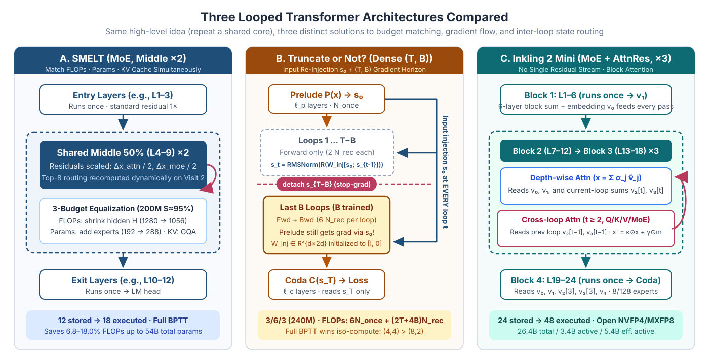
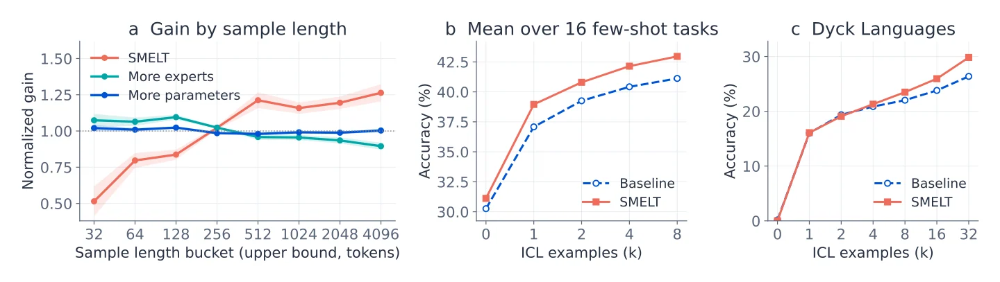
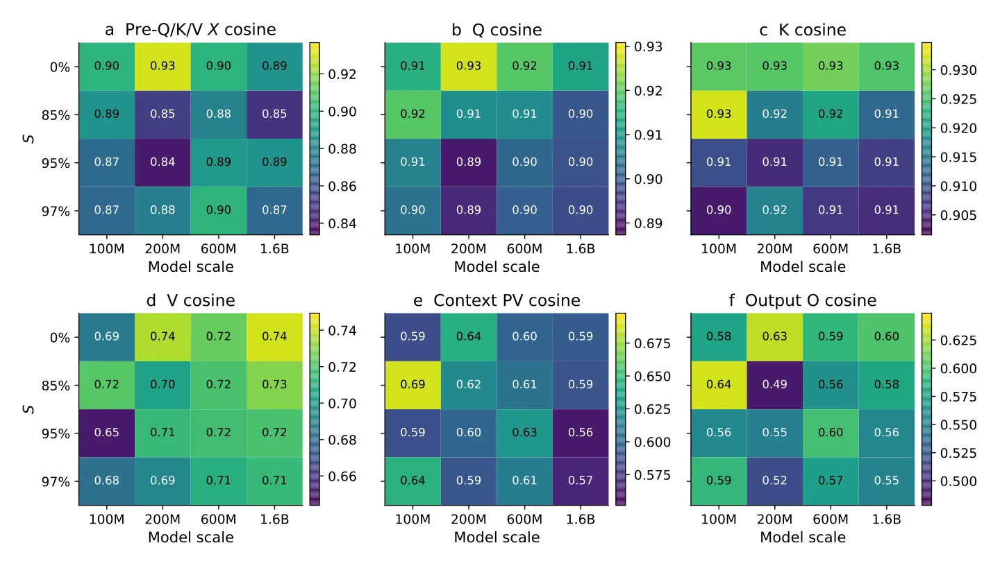
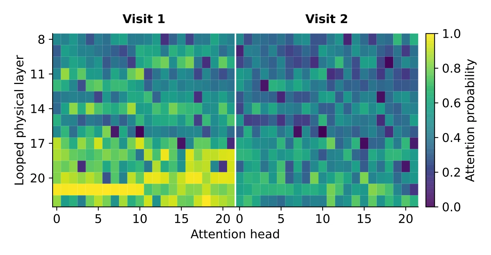
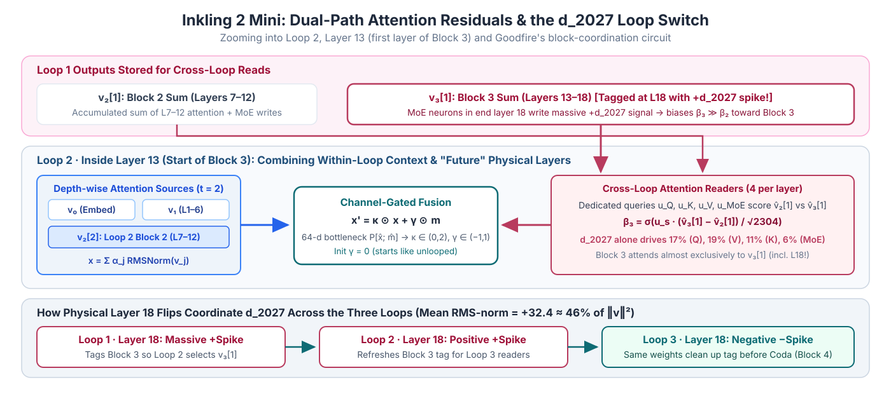
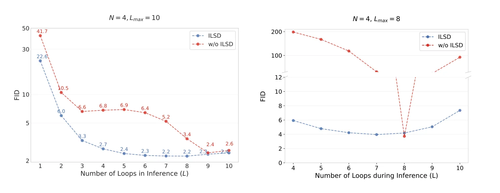
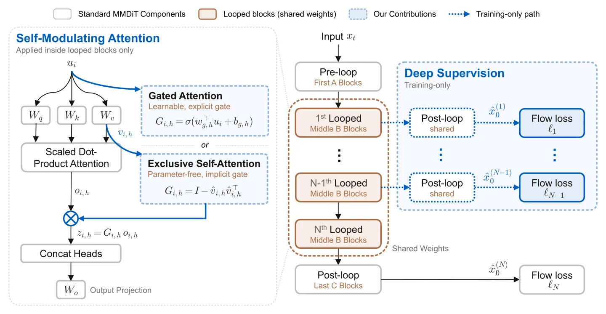
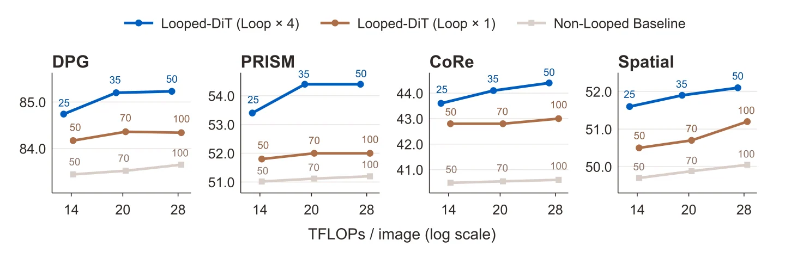

Repeating a shared block of Transformer layers across depth separates execution depth from unique parameter count[6][7]. For years, however, looped evaluations compared weight-tied models against unlooped baselines of the same stored parameter count, conflating genuine architectural benefit with the extra FLOPs and KV cache spent during repeated passes.
Five 2026 studies resolve those questions across language modeling and visual generation:
- Language models: SMELT[1] tests looping when per-token FLOPs, total parameters, and KV cache are all held equal; Truncate or Not?[2] settles how many forward and backward loops to allocate under fixed training compute; and Thinking Machines Lab's Inkling 2 Mini[3] alongside Goodfire's interpretability analysis[4] ships an open-weights looped MoE model and traces how activations coordinate across loops.
- Visual generation: across diffusion (DiT/MMDiT) and masked generative models (MaskGIT/MAGVIT), ELT[9] unlocks Any-Time elastic loop counts inside each sampling step via prefix self-distillation, while Looped-DiT[10] stabilizes open-ended text-to-image looping with Deep Supervision and Self-Modulating Attention (SMA / XSA).
Five Architectures at a Glance
The language-model designs keep entry and exit layers unshared while repeating a middle core under strict budget parity, gradient-horizon control, or cross-loop residual routing (Fig. 1); visual generators then embed weight-tied loops inside every iterative sampling or denoising step (Figs. 14 and 17), trading inter-step denoising for intra-step refinement and memory-wall hardware speedups.


| Architecture | Backbone & Looped Span | State Coupling & Supervision | Headline Result |
|---|---|---|---|
| SMELT | Sparse MoE (GQA, top-8); middle 50% repeated $2\times$ | $1/2$-scaled cumulative residuals; full BPTT to 215B tok | Saves 6.8–18.0% frontier FLOPs at matched FLOPs, params & KV |
| Truncate or Not? | Dense Huginn-style ($58\text{M}\text{–}919\text{M}$); middle $T\in\{1..16\}$ passes | $W_{\text{inj}}[s_0; s_{t-1}]$ + RMSNorm; swept $(T,B)$ (592 runs) | Full BPTT wins iso-compute; $(2,2)$ matches $(1,1)$ with −27% params |
| Inkling 2 Mini | 24L Hybrid MoE (8/128); Blocks 2–3 repeated $3\times$ (48L) | Depth-wise + cross-loop AttnRes ($\kappa\odot x + \gamma\odot m$); NVFP4/MXFP8 | Top <100B coding agent (48.2% DeepSWE); $d_{2027}$ switch coordinates loops |
| ELT | MaskGIT / MAGVIT / DiT; $N$-layer block looped $L\times$ per step | Prefix Intra-Loop Self Distillation ($\lambda: 1\to 0$); Any-Time $L$ | 4× fewer params (FID 2.0, FVD 72.8); 3.5× TPU throughput; 2× DiT speedup |
| Looped-DiT | Pixel-space MMDiT ([6,5,6], 260M); middle 5 blocks $\times 4$ (32L) |
Deep Supervision (Final+Mean) + parameter-free XSA |
Beats 6.5× larger T2I model (71.5 vs. 69.0) at 4.9× less compute; loops > steps |
Compute-Matched MoE Looping: SMELT
Matching FLOPs, Parameters, and KV Cache
Simply repeating $m$ of $L$ layers $r$ times increases effective depth to $L_{\text{eff}} = L + (r-1)m$ while leaving stored weights unchanged—but per-token FLOPs and KV cache grow in lockstep. On dense models under iso-depth (fixed FLOPs and KV), losing unique weights leaves each recurrence worth only $r^{0.46}$ unique-block equivalents, so dense looping loses on perplexity. SMELT breaks that lock with Mixture-of-Experts sparsity[1]:
- Match per-token FLOPs (< 4% mismatch): narrow the hidden width $H$ (e.g., at 200M, $S \approx 95\%$, $H$ shrinks from $1280$ to $1056$) so executing 18 effective layers spends nearly identical FLOPs to the 12-layer Baseline ($1.37\times 10^9$ vs. $1.33\times 10^9$ training FLOPs/token).
- Match total non-embedding parameters (< 1% mismatch): because MoE decouples stored parameters from active compute, raising expert count per layer ($192 \to 288$, still routing top-8) restores lost capacity ($3.89\text{B}$ vs. $3.87\text{B}$).
- Match KV cache (< 4% mismatch) and stabilize updates: shrink attention head size and raise the GQA ratio across the deeper execution trace, and scale every looped Attention and MoE residual update by $1/r$ ($1/2$) so tied weights do not blow up residual norms across visits.

Three systematic ablations at 200M lock the recipe:
- Loop position: repeating the middle 50% ($L4\text{–}9$ of 12, yielding 18 executed layers) beats full-stack looping ($1.9257$ vs. $1.9322$ validation loss at $S\approx 85\%$, and $1.8517$ vs. $1.8601$ at $S\approx 95\%$).
- Depth-to-width ratio: the looped model sustains a larger effective depth-to-width ratio ($12/18$ beats $8/12$, $10/15$, and $14/21$ on every metric, aided by multi-depth gradient signals feeding back to the same shared block).
- Loop count: two passes win ($1.9257$, DCLM Core $27.57$) over three ($1.9385$) or four ($1.9360$), because more passes under a strict FLOP cap force hidden width too thin.
Scaling Laws and Beyond-Loss Gains
Scaling across a $4 \times 4$ grid (100M, 200M, 600M, 1.6B active tiers $\times$ dense-FLOP control $S=0\%$ and sparse $S\approx\{85\%, 95\%, 97\%\}$, up to 53.9B non-embedding parameters, with 6 WSD cosine-decay branches to 215B tokens per run), SMELT outperforms the Baseline in every cell. Defining compute-equivalent sparsity from FLOP ratio $N_{\text{act}}^{\text{eq}} = (F/F_0)N_0$, $S = 1 - N_{\text{act}}^{\text{eq}}/N$, the authors fit separate Chinchilla-style surfaces:
$$\begin{aligned} \mathcal{L}(F, S, D) &= E + \frac{A\,(1 - S)^b}{F^a} + \frac{K}{D^c}, \\ \mathcal{L}^*(C, S) &= E + f(A,K,a,b,c,S)\,C^{-\gamma}, \qquad \gamma = \frac{ac}{a+c}. \end{aligned}$$On the sparse grid ($S \approx 85\text{–}97\%$), SMELT achieves both a steeper capacity exponent ($a=0.3892$ vs. $0.3703$) and steeper data exponent ($c=0.7011$ vs. $0.6594$), lifting the frontier exponent by $+5.5\%$ ($\gamma_{\text{SMELT}} = 0.250$ vs. $\gamma_{\text{Base}} = 0.237$). Holding validation loss fixed on the frontier, SMELT saves 6.8–10.0% training compute at $10^{20}$ FLOPs and 14.7–18.0% at $10^{21}$ FLOPs (extrapolating to $19.6\text{–}23.5\%$ at $10^{22}$), while keeping virtually the same optimal tokens-per-dense-equivalent-parameter (~56–91 TPP).

Crucially, downstream gains exceed what lower validation loss alone predicts:
- Matched win rates & positive sigmoid residuals: across 96 matched pairs, SMELT wins 96/96 on DCLM Completion, 83/96 on DCLM Core, and 29/30 on above-chance MMLU. Fitting a Baseline loss-to-score sigmoid reveals positive residuals that widen with scale (up to $+12.3\text{ millinats}$ on Completion and $+1.2\text{ pp}$ on Core at 1.6B, where Symbolic Problem Solving overtakes Reading Comprehension at $+1.9\text{ pp}$).
- Peak gains on structured domains: per-domain CE Gain at $10^{21}$ FLOPs peaks on Code ($20.4\%$), followed by Finance ($16.8\%$) and Math/STEM ($16.6\%$) vs. Web ($14.8\%$).
- Amplification on long contexts: normalized gain rises $1.52\times$ on long documents ($512\text{–}4096$ vs. $32\text{–}256$ tokens), whereas adding Baseline parameters or experts stays flat ($0.98\times$ and $0.88\times$).
- Few-shot ICL & Dyck bracket matching: with demonstrations ($k \ge 1$), accuracy lift doubles from $0.9\text{ pp}$ at $0$-shot to $1.9\text{ pp}$, reaching $29.8\%$ vs. $26.4\%$ on 32-shot Dyck Languages.

Inside the Second Pass
Probing 1M validation tokens across all 16 grid cells reveals a consistent internal mechanism—the second visit operates as an iterative refinement pass along coordinates discovered on visit 1 rather than overwriting or repeating the same function:

- Router splits into core + fresh experts: even at $S\approx 97\%$, the second visit reuses 2–3 of the top-8 experts (orders of magnitude above uniform random $8^2/n$) while swapping 5–6 experts, generating distinct computational paths from shared weights.
- Residuals grow and stay aligned: Visit 2 writes $1.2\text{–}3.5\times$ larger norms in both Attention and MoE (driven initially by RMSNorm's element-wise gain reacting to a directional shift in $x_\ell$), while maintaining same-layer cross-visit cosine $0.42\text{–}0.65$ (mean $0.56$ vs. $0.16$ for mismatched layers).
- Q/K anchor retrieval, V updates content: recomputing $Q, K, V$ leaves queries and keys closely aligned across visits ($0.89\text{–}0.93$ cosine, matching or exceeding input $X$'s $0.84\text{–}0.93$) with 56–66% overlap in top-8 attended tokens (vs. $28\text{–}34\%$ for different heads), whereas $V$ drops to $0.65\text{–}0.74$ and $PV, O$ diverge further.
- Attention sinks collapse: in a 1.6B Dyck head ($k=4$), BOS sink mass falls from 60% to 2% while attention on demonstration answers jumps from 24% to 85%; on general text, Visit 2 broadly reduces sinks across heads, reversing the usual depth-increasing sink trend.

Truncate or Not? Training Loops Under Compute Budgets
Input Re-Injection and (T, B) FLOP Accounting
Where SMELT matches architectures at full BPTT, Xiong, Chen et al.[2] isolate the training optimization question across 592 runs ($2.7\times 10^{22}$ FLOPs) of a dense Huginn-style[7] Prelude–Recurrent–Coda Transformer spanning $58\text{M}\text{–}919\text{M}$ non-embedding parameters on FineWeb-Edu:
$$s_0 = \mathcal{P}(x),\qquad s_t = \Phi_\theta(s_{t-1}; s_0) = \operatorname{RMSNorm}\!\Big(\mathcal{R}\!\big(W_{\text{inj}}[s_0;\,s_{t-1}]\big)\Big),\qquad p = \mathcal{C}(s_T).$$![Original architecture diagram of Truncate or Not? showing (a) training step for (T, B) = (4, 2) with stop gradient on s_{T-B} and input s0 injected into every loop, (b) shared loop block R with W_inj[s0; s_{t-1}], QK-norm Attention, ReLU^2 FFN, and trailing RMSNorm, and (c) forward/backward FLOPs totaling 6 N_once + (2T + 4B) N_rec.](./fig-tbp-arch.webp)
Three structural details govern how gradients flow:
- Per-loop $s_0$ input injection: every loop injects $s_0$ via $W_{\text{inj}} \in \mathbb{R}^{d\times 2d}$ initialized to $[I,\,0]$ (starting purely from the Prelude before learning to blend recurrent state), while a post-block RMSNorm keeps activation scale bounded across $T$ passes.
- Gradient truncation $(T, B)$: under $1 \le B \le T$, state $s_{T-B}$ is detached after $T-B$ forward-only passes, leaving only the final $B$ loops and the Coda in the backward graph—though Prelude still receives gradients directly through $s_0$ injection into the final $B$ loops.
- Forward/backward FLOP symmetry: at standard matrix accounting of $2$ FLOPs/param/token forward and $4$ backward, total compute-equivalent parameters $N_{\text{comp}}$ scale linearly with $T + 2B$:
Dropping two backward passes saves $8 N_{\text{rec}}$ FLOPs, which buys exactly four forward passes: $(T, B) = (8, 2)$ and $(4, 4)$ both spend $24 N_{\text{rec}}$ loop FLOPs per token ($T + 2B = 12$), and $(4, 1)$ matches $(2, 2)$ with $T + 2B = 6$. From a fixed-point perspective, truncating to $B$ loops sums only the first $B$ terms of the Neumann series $(I - \mathcal{J}^\star)^{-1}\partial_\theta\Phi^\star \approx \sum_{k=0}^{B-1}(\mathcal{J}^\star)^k \partial_\theta\Phi^\star$, injecting cumulative bias when $T$ is small (far from a contractive fixed point) or $B \lt T$.
Effective Parameter Law and Three Regimes
Extending a coupled size–data scaling law with a bounded multiplicative looping coefficient $g(T, B)$ fits 230 training configurations with $R^2 = 0.9992$ and in-sample RMSE $6.14 \times 10^{-3}$ nats (predicting held-out $(T,B)$ settings at $8.67\times 10^{-3}$ RMSE, nearly half the $1.65\times 10^{-2}$ error of an unbounded power-law gain):
$$\begin{aligned} L &= E + \left[A\left(\frac{N_{\text{eff}}}{N_0}\right)^{-\alpha} + H\left(\frac{D}{D_0}\right)^{-\beta}\right]^{\kappa}, \\ N_{\text{eff}} &= N_{\text{once}} + g(T,B) N_{\text{rec}}, \qquad g(T, B) = \exp\!\Big[c\,(1 - T^{-p}B^{-q})\Big]. \end{aligned}$$With fitted exponents $c \approx 1.112$, $p \approx 0.237$, and $q \approx 1.022$ (extrapolated ceiling $e^c \approx 3.04$), $q \gt 2p$ by more than a factor of two. Minimizing $T^{-p}B^{-q}$ along any equal-compute line $T + 2B = S$ proves (Lemma D.2) that whenever $q \ge 2p$, the unique optimum sits on the boundary $T^* = B^* = S/3$: backward loops buy more effective parameters per FLOP than forward-only loops, reversing the apparent paradox from earlier truncation studies.

| Optimization Regime | Optimal Strategy | Key Quantitative Result |
|---|---|---|
| Fixed forward $T$ ($T=8$) | Truncate ($B^* = 2$) | Minimizing $\chi = N_{\text{comp}}/N_{\text{eff}}$ reinvests saved bwd FLOPs into $1.51\times N,\,1.20\times D$, saving 33–35% FLOPs |
| Free $(T, B)$ at fixed $N, D$ | Full BPTT ($B = T$) | $(4,4)$ beats $(8,2)$ at all 5 sizes (240M: $2.2642$ vs. $2.2778$ nats), saving 8–14% frontier FLOPs |
| Fixed $N$ (weight cap) | Slow loops, fast data | Under full BPTT, $T^* \propto C^{0.24}$, $D^* \propto C^{0.76}$; switches $(1,1)\to(2,2)$ at ~14–17 TPP, $(2,2)\to(4,4)$ at ~200 TPP empirical |
| Free $N, D$ (dense) | $(1,1)$ FLOPs / $(2,2)$ best loop | $(2,2)$ $344\text{M}$ matches $(1,1)$ $471\text{M}$ ($2.3677$ vs. $2.3663$) with −27% params; wins by $0.0073$ nats at $+8\%$ FLOPs |

Connecting Dense (Truncate or Not?) vs. MoE (SMELT): Why does Truncate or Not? find unlooped $(1,1)$ ahead of looping on free-size dense models, while SMELT beats unlooped MoE by 6.8–18.0% FLOPs? They agree more than they disagree! Both conclude independently that $r = 2$ with full BPTT is the sweet spot. In dense models, weight tying forces $g(2,2) \approx 1.910 \lt 2$ without freeing capacity for extra weights, so 2 untied copies win purely on loss/FLOP. SMELT breaks that trade-off by spending the narrowed width's parameter budget on more sparse MoE experts while dynamic routing divergence across visits unlocks extra expressivity.
Production Circuits: Inkling 2 Mini
Attention Residuals and Cross-Loop Dataflow
Released under Apache 2.0 by Thinking Machines Lab on November 20, 2026[3][5] (and analyzed mechanistically by Goodfire[4]), Inkling 2 Mini turns weight-tied looping into a 26.4B-total / 3.4B-active / 5.4B-effective-active open-weights multimodal MoE model (~20GB mixed NVFP4/MXFP8 checkpoint supporting 1M context). Its 24 physical layers ($d = 2304$, 8 of 128 experts after pruning from 384 and healing on 1T tokens, then 2.2T RL tokens) split into four 6-layer blocks: Prelude Block 1 ($L1\text{–}6$) and Coda Block 4 ($L19\text{–}24$) run once, while core Blocks 2 & 3 ($L7\text{–}18$) loop $T=3$ times to execute 48 layers per token.
- Loop-span ablation: repeating the middle 12 layers beats looping the final 12 layers on 27 of 28 evaluations ($1.51\text{–}1.91\times$ compute-equivalent gain vs. $1.24\text{–}1.36\times$).
- Long-horizon control: on 512k-token agentic traces, an unpruned non-looped baseline requires $140\%$ more inference compute to reach the looped model's validation loss (with only $7.5\%$ lower training compute).

Architecturally, Inkling 2 Mini replaces the single cumulative residual stream with block-level Attention Residuals (AttnRes)[8] plus a cross-loop channel. Each block $i$ tracks a running sum $\mathbf{v}_i$ of its 6 Attention + MoE writes ($\mathbf{v}_0$ is the normalized token embedding), and every sublayer input mixes two attention readers:
- Depth-wise Attention: computes a softmax mixture $\mathbf{x} = \sum_j \alpha_j \hat{\mathbf{v}}_j$ over earlier blocks available within the current loop pass.
- Cross-Loop Attention: on loops $t \ge 2$, each layer's four sublayer inputs ($s \in \{Q, K, V, \text{MoE}\}$) use learned queries $\mathbf{u}_s$ over the previous loop's Blocks 2 and 3, gated through bottleneck $\mathbf{P}\in\mathbb{R}^{64\times 2d}$:
Crucially, $\boldsymbol{\gamma}$ initializes to zero so training starts identically to an unlooped model before gradually opening the cross-loop channel.
Because every sublayer's input decomposes linearly into weighted earlier writes $\mathbf{x}' = \sum_w \mathbf{c}_w$ with normalized attribution shares $s_w = (\mathbf{c}_w \cdot \mathbf{x}')/\|\mathbf{x}'\|^2$ summing to 1, Goodfire uncovered a striking structural twist: since Layer 13 on Loop 2 already receives current-loop Block 2 ($\mathbf{v}_2^{[2]}$) via depth-wise attention, its cross-loop reader attends almost exclusively to Loop 1's Block 3 ($\mathbf{v}_3^{[1]}$)—including Layer 18, reading directly from physically "deeper" layers than index 13.


Weight Tagging and the d2027 Switch
How do layers learn which blocks to read without an explicit routing supervisor? Goodfire inspects coordination in both weight space and activation space across 13,233 FineWeb tokens:
- Block-end weight tagging: comparing all $3{,}538{,}944$ MoE down-projection writer vectors ($24\text{ layers} \times 128 \times 1{,}152$ per layer) against all $104$ depth-wise + cross-loop reader queries ($|\cos| \ge 0.30$ top $0.001\%$, 3,490 pairs) reveals sharp concentration at block boundaries—layers 6, 12, and 18 write directly to Block 4's depth-wise readers, while Layer 18 writes heavily to Layer 13's cross-loop readers.
- Massive outlier switch $d_{2027}$: in RMS-normalized activations ($\sum_{i=1}^{2304} \hat{v}_i^2 = 2304$, average coord $=1$), single coordinate $d_{2027}$ reaches $+32.4$, carrying 46% of total squared norm. Since $\beta_3 = \sigma(s_3 - s_2) = \sigma\!\big(\frac{1}{\sqrt{d}}\sum_i u_i(\hat{v}_{3,i}-\hat{v}_{2,i})\big)$, $d_{2027}$ alone contributes 17% ($Q$), 19% ($V$), 11% ($K$), and 6% (MoE) of Loop 2 Layer 13's routing gap (top-5 outlier coords account for 60%, 62%, 32%, and 30%).
- Context-dependent polarity flip: most remarkably, the identical physical weights of Layer 18 write a massive positive spike onto $d_{2027}$ at the ends of Loop 1 and Loop 2 (telling future loops to attend to Block 3), then write a massive negative spike at the end of Loop 3 to clear the coordination signal before entering Coda Block 4.

Decoding Loops, Reasoning Bounds, and Monitorability
Evaluating intermediate hidden states across 1,250 FineWeb documents shows a stark contrast between vanilla logit decoding and learned/block lenses: raw logit-lens recovers poorly mid-block except near Block 3's end in each loop, whereas tuned-lens (learned affine map) and coda-lens (running Block 4 directly on intermediate states across the sequence) track final predictions smoothly even across early loops—showing that looped latent computation remains decodable rather than opaque.

Using both Inkling 2 Mini and its research sibling TML-d24-varloop-research (trained on 1–5 passes, RL at 3 passes), Thinking Machines also pinned down what extra loops do—and do not—buy at inference time:
- Reasoning improves, static knowledge does not: on no-CoT Think Fast tasks, 50%-reliability horizon climbs from $16\text{ s}$ ($1$ pass) to $37\text{ s}$ ($3$ passes) and holds steady out to $10$ extrapolated passes ($40\text{ s}$), while serial N-Hop Lookup accuracy keeps rising out to $10$ hops and DeepSWE v1.1 hits $48.2\%$ ($0.703$ intelligence/watt on DGX Spark). In contrast, closed-book factual benchmarks (SimpleQA Verified, AA-Omniscience) stay flat with extra loops—memory bandwidth still tracks stored parameters ($26.4\text{B}$), which Inkling 2 Mini offsets with tool-assisted search ($79.0\%$ BrowseComp, $85.3\%$ DeepSearchQA).
- Shorter, not stealthier CoTs: on matched solved GPQA Diamond problems, raising loops cuts generated reasoning tokens by more than half while leaving English readability intact and reducing backtracking ("wait", "actually", "hmm"). Meanwhile, CoT controllability remains near floor ($\le 0.1\%$ at 750–1,250 tokens) and LinuxArena stealth rates under full monitoring stay low ($0.3\text{–}1.3\%$), though Thinking Machines cautions larger RL-trained looped models remain an open oversight frontier.
GPQA Diamond Metric (varloop) |
1 Pass | 3 Passes | 5 Passes |
|---|---|---|---|
| Mean reasoning tokens | 3,703 | 1,731 | 1,661 |
| Mean words per sentence | 8.9 | 8.7 | 8.7 |
| Dictionary word fraction | 94.6% | 94.5% | 94.4% |
| Uncertainty markers ("wait", "hmm", ...) | 9.7 | 3.9 | 3.6 |
Elastic Visual Generation: ELT
Intra-Loop Self Distillation and Any-Time Inference
Unlike language models that generate one token per forward pass, visual generators already run an outer loop over $K$ iterative denoising (DiT[9]) or masked parallel-decoding steps (MaskGIT/MAGVIT). Elastic Looped Transformers (ELT) (Goyal et al., ECCV 2026) nest an orthogonal intra-step loop inside each sampling iteration: a single composite block $g_\Theta(\mathbf{x}) = f_{\theta_N}(\cdots f_{\theta_1}(\mathbf{x}))$ of $N$ unique layers is reused $L$ times per step, $F_{(N,L)}(\mathbf{x}) = g_\Theta^L(\mathbf{x})$, yielding effective depth $\mathcal{D} = N\times L$ from only $N$ stored layers. This reuse directly targets accelerator memory bottlenecks, lifting arithmetic intensity (FLOPs per transferred byte) by up to $L\times$ and matching on-chip SRAM capacity.
However, naïvely optimizing only the maximum loop depth $L_{\max}$ turns intermediate states $X_k^{\text{int}}$ into a black box—images look coherent solely at $L = L_{\max}$ and collapse at every other loop count (DiT FID explodes to $120\text{–}200$ away from $L=8$). ELT solves this with Intra-Loop Self Distillation (ILSD) paired with Stochastic Student Sampling ($S^3$): at every training step, the full $L_{\max}$ teacher trajectory supervises a randomly sampled prefix student exit $L_{\text{int}} \sim \mathcal{U}(L_{\min}, L_{\max})$ through a curriculum weight $\lambda$ linearly decayed from $1 \to 0$:
$$\begin{aligned} \mathcal{L}^{\text{ILSD}}_{\Theta} &= \mathcal{L}^{\text{GT}}\!\big(F_{(N,L_{\max})}(\mathbf{x}),\,\mathbf{y}\big) + \lambda\,\mathcal{L}^{\text{GT}}\!\big(F_{(N,L_{\text{int}})}(\mathbf{x}),\,\mathbf{y}\big) \\ &\quad + (1-\lambda)\,\mathcal{L}^{\text{dist}}\!\Big(F_{(N,L_{\text{int}})}(\mathbf{x}),\,\operatorname{sg}\!\big(F_{(N,L_{\max})}(\mathbf{x})\big)\Big), \qquad L_{\text{int}} \sim \mathcal{U}(L_{\min}, L_{\max}). \end{aligned}$$Because the student prefix $F_{(N,L_{\text{int}})}$ is already computed along the way to $F_{(N,L_{\max})}$, ILSD needs zero extra teacher forward passes (cross-entropy for discrete MaskGIT/MAGVIT tokens; sigmoid-weighted MSE for continuous DiT latents). Decaying $\lambda$ anchors the student to ground truth early before shifting to mature teacher representations, compressing refinement into earlier loops.

Empirically, ILSD keeps FID smooth across the entire loop spectrum for both MaskGIT and DiT—and even enables modest depth extrapolation beyond $L_{\max}$ (on UCF-101 trained at $L_{\max}=4$, video FVD improves to $69.20$ at unseen $L=6$).

Parameter Efficiency, DiT Convergence, and Hardware Throughput
Across class-conditional image and video synthesis under iso-inference-compute settings, ELT cuts unique parameter counts by $2\text{–}4\times$ while matching or beating deeper unlooped models:
- ImageNet $256\times 256$ (MaskGIT): ELT-XL ($7N\times 4L$, $111\text{M}$) matches $446\text{M}$ MaskGIT-XL at FID $2.0$ and identical $3.9\text{k}$ GFLOPs ($4\times$ fewer params), tracing a clean compute frontier $\text{FID} = 1922.5 \cdot G^{-0.95} + 1.48$.
- ImageNet $256\times 256$ (DiT & minimum unique depth): on SD v1.4 latent DiT ($\mathcal{D}=32$ effective layers), ELT ($16N\times 2L$, $1.1\text{B}$) reaches FID $2.83$ and ELT ($8N\times 4L$, $539\text{M}$) reaches FID $3.16$—both beating the $2.1\text{B}$ 32-layer DiT baseline (FID $3.43$) while converging $2.0\times$ and $1.4\times$ faster during training. A clear expressivity floor also appears: $1N\times 32L$ ($69\text{M}$) degrades to FID $10.30$, showing a minimum unique block size $N$ is required per step.
- UCF-101 Video (MAGVIT): under data-constrained video training ($\sim 13.7\text{M}$ tokens), a compact $76\text{M}$ ELT ($6N\times 4L$) outperforms $306\text{M}$ MAGVIT-L (FVD $72.8 \pm 2.5$ vs. $76 \pm 2$) at matched $\sim 4.3\text{k}$ GFLOPs, scaling down to FVD $60.8$ at $6N\times 6L$ (24 steps) thanks to weight-sharing regularization.
- Memory wall & TPU v6e hardware gains: on a $1\times 1$ TPU v6e slice ($\mathcal{D}=32, 8N\times 4L$), ELT cuts peak training HBM by $34\%$ ($5.1\text{ GB}$ vs. $7.7\text{ GB}$ at the same $130\text{ ms}$ step time; unrolling layers into
ELToptdrops step time to $118\text{ ms}$ at $5.8\text{ GB}$). At inference (batch 8), keeping $\Theta$ on-chip avoids repeated HBM transfers and lifts throughput by $2.9\times$ (L), $3.3\times$ (XL), and $3.5\times$ (H).
| ELT Configuration ($\text{Scale / }\mathcal{D}$) | Params | Quality Metric | Efficiency Gain |
|---|---|---|---|
| DiT Baseline (32 layers) | 2.1B | FID 3.43 | 1.0× speed · 500K steps |
| ELT DiT ($8N \times 4L$) | 539M (4× less) | FID 3.16 | 1.4× faster DiT convergence |
| ELT DiT ($16N \times 2L$) | 1.1B (2× less) | FID 2.83 | 2.0× faster DiT convergence |
| ELT-XL / H (TPU v6e, BS=8) | 111M (7N×4L) | FID 2.0 (MaskGIT) | 3.3×–3.5× inference throughput; −34% train HBM |

Text-to-Image Latent Reasoning: Looped-DiT
Why Naive MMDiT Looping Fails: Deep Supervision and XSA
Where ELT studies class-conditional synthesis by looping the full transformer stack, Looped-DiT (Chng, Chen et al.[10]) brings looped computation to open-ended $512\times 512$ pixel-space text-to-image generation where prompts impose simultaneous counting, attribute, and spatial constraints. Built on the $260\text{M}$ MiniT2I MMDiT backbone (17 blocks split [6, 5, 6] into pre-loop $\mathcal{A}$, shared middle blocks $\mathcal{B}$, and post-loop $\mathcal{C}$, looped $N=4$ times to $32$ effective block applications per flow-matching denoising step):
Repeating $\mathcal{B}$ naïvely fails for two concrete mechanistic reasons:
- Gradient starvation on intermediate loops: supervising only the final loop $h^{(N)}$ leaves earlier exits unaligned and causes quality to degrade once test-time loops exceed training depth ($N > 4$).
- Spatial geometry erosion from unregulated attention: a linear ridge-regression probe decoding 2D patch grid coordinates from post-loop activations plunges from $R^2 = 0.865$ after loop 1 to $0.562$ after loop 8 ($-0.303$, worse than the non-looped baseline's $0.668$).

Looped-DiT resolves both failure modes inside the [6, 5, 6] loop with virtually zero inference overhead:
- Deep Supervision across all loops: during training only, every intermediate state $h^{(n)}$ ($n=1,\ldots,N$) passes through the shared post-loop stage $\hat{x}_0^{(n)} = \mathcal{C}(h^{(n)})$ against the clean-image flow-matching loss $\mathcal{L} = \sum_{n=1}^N w_n \ell_n$. On B/32,
Final + Meanweighting $(\frac{1}{3},\frac{1}{3},\frac{1}{3},1)$ reaches $57.5$ average vs. exponential $(\frac{1}{8},\frac{1}{4},\frac{1}{2},1)$ at $57.1$ and naive looping at $56.2$ (at $1.54\times$ training GFLOPs—$1{,}246$ vs. $809$—with 0 extra inference params or FLOPs). - Lightweight adaptive early-exit gate: leveraging supervised intermediate exits, a 4-query cross-attention gate predicts the maximum remaining per-loop loss reduction $y_r = \max\{0, \max_{k>r}(\ell_r-\ell_k)/(k-r)\}$ without retraining the generator, matching the 4-loop ceiling in $2.70$ mean loops and halving degradation at $1.25$ loops.
- Self-Modulating Attention (SMA / XSA): inside looped blocks $\mathcal{B}$ only, each attention head output $o_{i,h} = \sum_j \alpha_{ij,h} v_{j,h}$ is modulated before head concatenation by either a learned sigmoid gate or parameter-free Exclusive Self Attention (XSA)[11], which orthogonally projects out the token's own value direction $\hat{v}_{i,h}$: $$\begin{aligned} z_{i,h} &= G_{i,h}\,o_{i,h}, \qquad G_{i,h}^{\text{gate}} = \sigma\!\big(w_{g,h}^\top u_i + b_{g,h}\big), \\ G_{i,h}^{\text{xsa}} &= I - \hat{v}_{i,h}\hat{v}_{i,h}^\top, \qquad \hat{v}_{i,h} = \frac{v_{i,h}}{\|v_{i,h}\|_2}, \qquad \big\|z_{i,h}^{\text{xsa}}\big\|_2 \le \|o_{i,h}\|_2. \end{aligned}$$ Because $G_{i,h}^{\text{xsa}}$ is non-expansive ($\|z\|_2 \le \|o\|_2$) and removes self-value reinforcement across repeated passes, controlled ablations show XSA adds $+1.6$ points on Looped-DiT ($57.5 \to 59.1$) vs. $-0.1$ on the parameter-matched non-looped baseline (17L) and $+0.7$ on compute-matched 32L+DeepSup—preventing over-writing hallucinations such as adding extra objects on later loops (Fig. 18c).

Loop Depth vs. Denoising Steps and Textual CoT
Looped-DiT outperforms both frontier generators and strictly compute-matched unlooped controls:
- B/16 six-benchmark suite: across GenEval ($87.4$), DPG ($87.0$), PRISM ($67.0$), T2I-CoReBench ($53.5$), SpatialGenEval ($54.6$), and TIIF-Short ($79.7$), the $0.26\text{B}$ Looped-DiT B/16 averages $71.5$—beating runner-up
InternVL-U($1.7\text{B}$, avg $69.0$) with $6.5\times$ fewer parameters and $4.9\times$ lower inference compute, as well as 6.6B–6.9B explicit CoT-reasoning generators (GoT-R1$63.2$,T2I-R1$63.9$,Uni-CoT$66.8$). - Controlled B/32 ablations: Looped-DiT ($260\text{M}$, $59.1$) cleanly defeats parameter-matched (
MiniT2I, $260\text{M}$, $55.2$), inference-FLOP-matched (Deeper$473\text{M}$, $57.7$;Wider$489\text{M}$, $58.6$), and training-FLOP-matched deep-supervised baselines (Deeper + DeepSup, $1{,}246$ GFLOPs, $58.1$).

Crucially, Looped-DiT settles two broader inference-compute allocation questions:
- Loop depth beats extra denoising steps under equal FLOPs: at matched per-image budgets ($14, 20, 28$ TFLOPs), spending FLOPs on
Loop × 4($25, 35, 50$ steps) consistently outperforms doubling denoising steps atLoop × 1or without looping ($50, 70, 100$ steps) across DPG, PRISM, CoRe, and Spatial (Fig. 20). - Looped latent refinement complements explicit textual CoT: on subtasks requiring multi-object, relational, or spatial constraint satisfaction, looping delivers almost all the gain, whereas Qwen3 CoT prompt rewriting excels at inferring unstated world/physical details—combining both reaches $+5.5$ overall (Table 5).

Loop × 4, fewer denoising steps) beats spending the same budget on more denoising steps (Loop × 1 / unlooped). Source: Chng, Chen et al., Looped Diffusion Transformer[10].| T2I Subtask / Capability (B/32) | CoT Only | Looping Only | CoT + Looping |
|---|---|---|---|
| Benchmark average (4 sets) | +2.1 | +4.0 | +5.5 |
| PRISM / Long Text (constraints) | +3.1 | +9.1 | +9.4 |
| CoRe / Multi-Relation & Procedural | +1.2 / +4.7 | +8.3 / +9.4 | +8.4 / +9.6 |
| Spatial / Orientation & Motion | +0.0 / +0.1 | +6.0 / +6.0 | +6.2 / +6.3 |
| CoRe / Generalization (implied) | +22.2 | +7.5 | +24.5 |
Connecting LLM vs. Visual Looped Transformers: Across all five papers, repeating weights succeeds only when two failure modes are controlled together:
- Signal and norm drift across shared passes: stabilized via $1/r$ residual scaling in SMELT, $W_{\text{inj}}[s_0; s_{t-1}]$ input injection in Truncate or Not?, cross-loop attention residuals in Inkling 2 Mini, and XSA orthogonal self-value projection in Looped-DiT.
- Gradient supply across intermediate loops: language models compute next-token loss only at the end and therefore require full BPTT ($B=T$), whereas visual generators share the exact same denoising/unmasking target at every loop—allowing ILSD prefix self-distillation or shared post-loop Deep Supervision to supervise every intermediate exit directly.
Design Takeaways
- Combine looping with sparse MoE—not thin dense blocks: repeating the middle 50% twice gives both dense and MoE models the best return per executed layer, but MoE lets you narrow hidden width without forfeiting total parameter memory, yielding genuine 6.8–18.0% compute savings at equal FLOPs and KV cache.
- Do not blindly truncate BPTT if $T$ is tunable: backward passes through the recurrent core buy over twice the effective-parameter exponent of forward-only passes ($q\approx 1.02 \gg 2p\approx 0.47$). Only truncate ($B^*=2$) when $T$ is forced large by architecture or latency constraints.
- Expect multi-loop coordination to concentrate on sharp channels: replacing plain residual addition with block-level attention residuals gives loops rich selective memory across passes, yet training still organically elects single outlier dimensions like $d_{2027}$ at block exits to tag state and flip polarity before decoding.
- In visual generation, supervise intermediate loops directly: when every loop shares the same denoising or unmasking target, supervising random prefix exits via ILSD ($\lambda: 1 \to 0$) or shared post-loop Deep Supervision (
Final+Mean) eliminates intermediate-exit collapse with zero inference overhead and unlocks Any-Time / adaptive compute scaling plus $4\text{–}6.5\times$ parameter savings. - Regulate repeated attention writes and pair loops with steps/CoT: unchecked looped self-attention erodes 2D spatial layout ($R^2: 0.865 \to 0.562$), which parameter-free XSA fixes without adding weights. Under matched inference TFLOPs, spending compute on intra-step loops outperforms extra denoising steps while complementing textual CoT on constraint-heavy prompts.
Citation
If you reference these notes or diagrams, please cite:
Chaoran Feng (2026). "Looped Transformers: Compute-Matched Scaling, Training Gradients, and Internal Circuits". Chaoran Feng's Blog. https://www.falcary.com/blogs/looped-transformers/
@article{feng2026looped,
title = {Looped Transformers: Compute-Matched Scaling, Training Gradients, and Internal Circuits},
author = {Feng, Chaoran},
year = {2026},
month = {November},
url = {https://www.falcary.com/blogs/looped-transformers/}
}References
- SMELT: Scaling Laws for Compute-Matched MoE Looped Transformers. Wang, Zhang et al., Tsinghua University, ByteDance Seed, M-A-P, and TokenWave.AI, 2026 (arXiv:2609.01343).
- Truncate or Not? A Scaling Study of Looped Transformers with Truncated Backpropagation. Xiong, Chen et al., HKU MMLab and Yale University, 2026 (arXiv:2610.26030).
- Introducing Inkling 2 Mini. Thinking Machines Lab, November 20, 2026.
- Interpreting Inkling 2 Mini. Lee, Krishnamurthy, Merullo, Balsam, and Lubana, Goodfire, November 20, 2026.
- Inkling 2 Mini Model Card. Thinking Machines Lab, November 20, 2026.
- Universal Transformers. Dehghani, Gouws, Vinyals, Uszkoreit, and Kaiser, ICLR 2019 (arXiv:1807.03819).
- Scaling up Test-Time Compute with Latent Reasoning: A Recurrent Depth Approach. Geiping et al., NeurIPS 2025 (arXiv:2502.05171).
- Attention Residuals. Kimi Team: Chen et al., 2026 (arXiv:2603.15031).
- ELT: Elastic Looped Transformers for Visual Generation. Goyal, Agrawal, Anil, Jain, Paul, and Kusupati, ECCV 2026 (arXiv:2604.09168).
- Looped Diffusion Transformer. Chng, Chen, Tong, Diao, Cai, Yang, Liu, Lu, Lin, and Huang, SenseTime Research, Tsinghua University (LeapLab), and NTU, 2026 (arXiv:2609.40305).
- Exclusive Self Attention. Zhai, 2026 (arXiv:2603.09078).